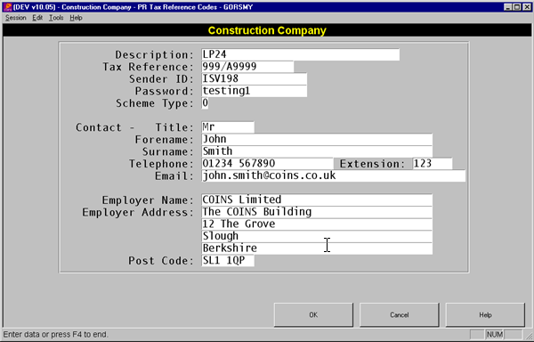

For each tax scheme that is submitting an Internet return, you have to complete some additional information. This information can be maintained in Tax References Codes maintenance as shown in the screen shot below.

The Sender ID and Password are supplied to you by HMRC when you register to submit online.
The Scheme Type can be 0=Complete or 1=P14s Only. If you have employees in the Tax Scheme that are not held on
Employer Address lines 2, 3, and 4, and the